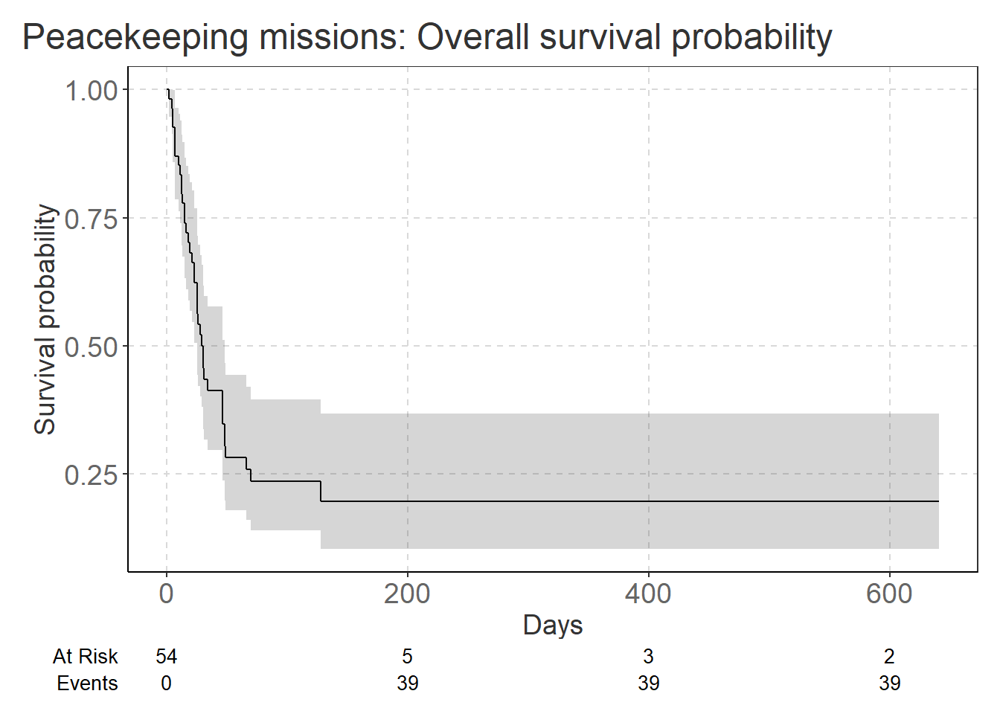
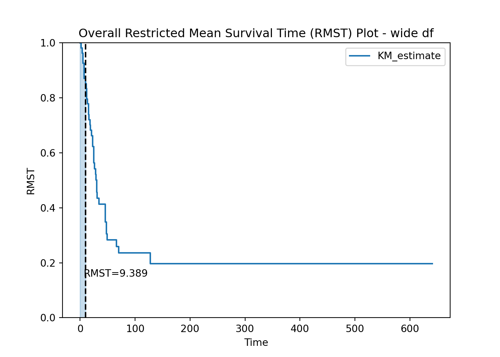
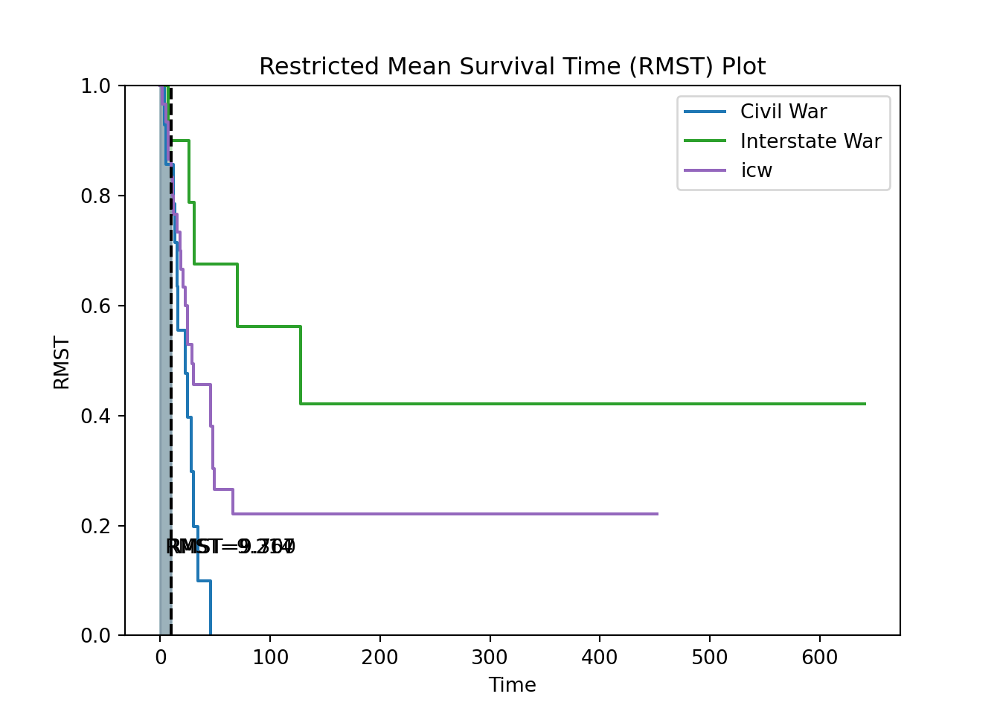
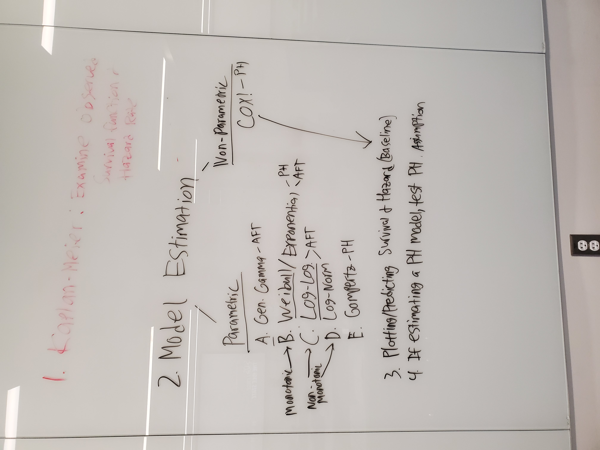

Code
library(haven)
library(tidyverse)
library(flexsurv)
library(survival)
library(survminer)
library(ggsurvfit)
library(coxed)
#library(texreg)
source('my_gg_theme.R')Michael L. Davies
August 8, 2023
This topic has been on my mind for a while. The relationship between war type and the duration of subsequent peacekeeping missions almost certainly varies widely.
Specifically, I theorize (based on nothing but my gut) that civil wars have dynamics that exacerbate peacekeeping missions. Civil wars represent neighbors fighting for control of terrain and power over the respective inhabitants. Grievances commonly persist beyond the resolution of open conflict. Peace is fragile and vulnerable to spoilers, grudges, and revenge-seeking—all of which represent challenges to peacekeeping.
On the other hand, generally speaking, interstate wars might have more clearly defined objectives and could be resolved more swiftly through diplomatic means or clearly defined peace agreements, leading to comparatively shorter peacekeeping mission durations.
Wars vary widely in terms of internal and external dynamics—most of which linger as peacekeeping missions try to stabilize the situation. Is there a relationship between war type and peacekeeping mission duration?
So, here I will conduct a parametric event history (AKA survival) analysis utilizing UN peacekeeping data. I will two of the three conflict types: civil, interst, and icw.
I implemented all models in both R and Python (See respective tabs). The results, of course, are marginally different likely a result of rounding error. Therefore, I base all interpretations on the results from R for no good reason.
In the context of implementing a survival model using flexsurvreg() in R, the appropriate shape of the dataframe depends on how you want to model the relationship between the covariates and the survival outcome. Both dataframe structures you provided are valid, but they represent different ways of specifying the covariates in the model.
un_df <-
read_dta('UNdata.dta') %>%
select(failed, duration, civil, interst, icw) %>%
drop_na()
# references
# https://www.ncbi.nlm.nih.gov/pmc/articles/PMC5868723/
# https://www.emilyzabor.com/tutorials/survival_analysis_in_r_tutorial.html#Kaplan-Meier_plots
# https://lifelines.readthedocs.io/en/latest/lifelines.plotting.html
# reshaping to experiment
un_df_cat <-
un_df %>%
mutate(
wartype = factor(
if_else(civil == 1,
'civil',
if_else(interst == 1,
'interst',
'icw')))) %>%
mutate(wartype =
fct_relevel(wartype,
"icw",
"civil",
"interst")) %>%
select(-c(civil, interst, icw))
# Python requrres numeric
un_df_num <-
un_df %>%
mutate(
wartype =
if_else(civil == 1,
1,
if_else(interst == 1,
2,
3))) %>%
select(-c(civil, interst, icw))
un_df %>%
head() %>%
knitr::kable()| failed | duration | civil | interst | icw |
|---|---|---|---|---|
| 1 | 2 | 0 | 0 | 1 |
| 1 | 4 | 1 | 0 | 0 |
| 1 | 5 | 0 | 0 | 1 |
| 1 | 5 | 1 | 0 | 0 |
| 1 | 7 | 0 | 0 | 1 |
| 1 | 7 | 0 | 1 | 0 |
Initial (descriptive) look at the data: The survival probability reflects the likelihood of an individual surviving or not experiencing the event up to that time point. It ranges from 0 to 1, with 0 indicating no survival (event occurred) and 1 indicating complete survival (no event occurred). Each curve below represents a different group within the study, and we see distinct differences in survival probabilities between the groups.

We can use the summary() to find the probability of surviving to 1 year, which is approximately 20%. (Note: the time variable in the data is actually in days, so we need to use times = 365.25)
Call: survfit(formula = Surv(duration, failed) ~ 1, data = un_df)
time n.risk n.event survival std.err lower 95% CI upper 95% CI
365 3 39 0.196 0.063 0.105 0.369According to the Python documentation, these plots show the survival function of the model plus it’s area-under-the-curve (AUC) up until the point t. The AUC is known as the restricted mean survival time (RMST).
import pandas as pd
import numpy as np
import matplotlib.pyplot as plt
from lifelines import GeneralizedGammaFitter, ExponentialFitter, WeibullFitter, CoxPHFitter, LogNormalFitter
from lifelines import GeneralizedGammaRegressionFitter
from lifelines.utils import restricted_mean_survival_time
from lifelines.datasets import load_waltons
from lifelines.plotting import rmst_plot, plot_lifetimes
from lifelines import KaplanMeierFitter
from lifelines.plotting import rmst_plot# https://lifelines.readthedocs.io/en/latest/lifelines.plotting.html
df = r.un_df_cat
time_limit = 10
# Create Kaplan-Meier fitted objects for each group
kmf_civil = KaplanMeierFitter().\
fit(df['duration'], df['failed']) # label='wartype'
rmst_plot(kmf_civil, t=time_limit, show_censors=False)
plt.xlabel('Time')
plt.ylabel('RMST')
plt.title('Overall Restricted Mean Survival Time (RMST) Plot - wide df')
plt.legend()
plt.show()
# https://lifelines.readthedocs.io/en/latest/lifelines.plotting.html
df = r.un_df
# Separate the data into groups based on 'civil' and 'interst'
ix_civil = df['civil'] == "1"
ix_interst = df['interst'] == "1"
ix_icw = df['icw'] == "1"
# Create Kaplan-Meier fitted objects for each group
kmf_civil = KaplanMeierFitter().\
fit(df['duration'][ix_civil], df['failed'][ix_civil], label='Civil War')
kmf_interst = KaplanMeierFitter().\
fit(df['duration'][ix_interst], df['failed'][ix_interst], label='Interstate War')
kmf_icw = KaplanMeierFitter().\
fit(df['duration'][ix_icw], df['failed'][ix_icw], label='icw')
# Plot RMST for each group
ax = plt.subplot(111)
rmst_plot(kmf_civil, t=10, ax=ax, show_censors=False)
rmst_plot(kmf_interst, t=10, ax=ax, show_censors=False)
rmst_plot(kmf_icw, t=10, ax=ax, show_censors=False)
plt.xlabel('Time')
plt.ylabel('RMST')
plt.title('Restricted Mean Survival Time (RMST) Plot')
plt.legend()
plt.show()df = r.un_df_cat
# Separate the data into groups based on 'civil' and 'interst'
ix_civil = df['wartype'] == "civil"
ix_interst = df['wartype'] == "interst"
ix_icw = df['wartype'] == "icw"
time_limit = 10
# Create Kaplan-Meier fitted objects for each group
kmf_civil = KaplanMeierFitter().\
fit(df['duration'][ix_civil], df['failed'][ix_civil], label='Civil War')
kmf_interst = KaplanMeierFitter().\
fit(df['duration'][ix_interst], df['failed'][ix_interst], label='Interstate War')
kmf_icw = KaplanMeierFitter().\
fit(df['duration'][ix_icw], df['failed'][ix_icw], label='icw')
# Plot RMST for each group
ax = plt.subplot(111)
rmst_plot(kmf_civil, t=time_limit, ax=ax, show_censors=False)
rmst_plot(kmf_interst, t=time_limit, ax=ax, show_censors=False)
rmst_plot(kmf_icw, t=time_limit, ax=ax, show_censors=False)
plt.xlabel('Time')
plt.ylabel('RMST')
plt.title('Restricted Mean Survival Time (RMST) Plot')
plt.legend()
plt.show()
Estimate a parametric survival model using the generalized gamma distribution and interpret the coefficient estimates.
Intercept only (NULL) model:
Call:
flexsurvreg(formula = Surv(time = duration, event = failed) ~
1, data = un_df, dist = "gengamma")
Estimates:
est L95% U95% se
mu 2.921 2.326 3.516 0.304
sigma 1.325 1.034 1.698 0.168
Q -1.212 -2.003 -0.422 0.403
N = 54, Events: 39, Censored: 15
Total time at risk: 3994
Log-likelihood = -197.3282, df = 3
AIC = 400.6565When using a wide dataframe (stratified war type with cols = civil, interst, and icw), R produces:
Call:
flexsurvreg(formula = Surv(time = duration, event = failed) ~
civil + interst, data = un_df, dist = "gengamma")
Estimates:
data mean est L95% U95% se exp(est) L95%
mu NA 3.0254 2.2488 3.8019 0.3962 NA NA
sigma NA 1.3252 1.0380 1.6917 0.1651 NA NA
Q NA -0.9043 -1.8681 0.0595 0.4917 NA NA
civil 0.2593 -0.2528 -1.1581 0.6525 0.4619 0.7766 0.3141
interst 0.1852 0.9711 -0.0535 1.9957 0.5228 2.6408 0.9479
U95%
mu NA
sigma NA
Q NA
civil 1.9203
interst 7.3575
N = 54, Events: 39, Censored: 15
Total time at risk: 3994
Log-likelihood = -195.346, df = 5
AIC = 400.692I reshaped to include a wartype covariate that collapses the three types of war to war column – primarily because this is the shape required for Python. Note that R can handle it either way:
| failed | duration | wartype |
|---|---|---|
| 1 | 2 | icw |
| 1 | 4 | civil |
| 1 | 5 | icw |
| 1 | 5 | civil |
| 1 | 7 | icw |
| 1 | 7 | interst |
Call:
flexsurvreg(formula = Surv(time = duration, event = failed) ~
wartype, data = un_df_cat, dist = "gengamma")
Estimates:
data mean est L95% U95% se exp(est)
mu NA 3.0254 2.2488 3.8019 0.3962 NA
sigma NA 1.3252 1.0380 1.6917 0.1651 NA
Q NA -0.9043 -1.8681 0.0595 0.4917 NA
wartypecivil 0.2593 -0.2528 -1.1581 0.6525 0.4619 0.7766
wartypeinterst 0.1852 0.9711 -0.0535 1.9957 0.5228 2.6408
L95% U95%
mu NA NA
sigma NA NA
Q NA NA
wartypecivil 0.3141 1.9203
wartypeinterst 0.9479 7.3575
N = 54, Events: 39, Censored: 15
Total time at risk: 3994
Log-likelihood = -195.346, df = 5
AIC = 400.692Accelerated Failure Time Models:
Assumption: The accelerated failure time (AFT) model assumes that the covariates have a multiplicative effect on the survival time or the time-to-event variable. In other words, the model assumes that the covariates accelerate or decelerate the time scale in a linear way.
Civil War
For an AFT model, the coefficient (call it \(\beta_1\)) represents the log of the time ratio associated with the covariate. In this case, the covariate civil1 is binary, and it compares the effect of being in the group civil1 (compared to the reference group civil0) on the survival time. Since the coefficient is -0.26, we would take the exponential of the coefficient (i.e., exp(-0.26)) to get the time ratio. (Time Ratio: exp(-0.26) ≈ 0.78)
So, wars in the group civil1 have a survival time that is approximately 0.78 times shorter (or 22% shorter) compared to wars in the reference group civil0, all other factors being equal.
Since the coefficient is negative, it suggests that being in the civil1 group is associated with shorter survival times (an accelerating effect on the event time) compared to the reference group civil0.
Interstate War
For interstate war, the time Ratio: exp(0.9711) ≈ 2.6408 indicates that wars in the group interst1 have a survival time that is approximately 2.64 times longer (or 164% longer) compared to wars in the reference group interst0, all other factors being equal.
Since the coefficient is positive, it suggests that being in the interst1 group is associated with longer survival times (a decelerating effect on the event time) compared to the reference group interst0.
# https://lifelines.readthedocs.io/en/latest/Survival%20Regression.htmlAC
df = r.un_df_num
df['Intercept'] = 1.
# create parameters <-> covariates dict
# The values in the dict become can be formulas, or column names in lists:
regressors = {
'mu_': df.columns.difference(['failed', 'duration']),
'sigma_': ["wartype", "Intercept"],
'lambda_': 'wartype + 1',
}
# this will regress df against all 3 parameters
# gg_model = GeneralizedGammaRegressionFitter(penalizer=1.).\
# fit(df, 'duration', 'failed')
gg_model = GeneralizedGammaRegressionFitter(penalizer=0.0001).\
fit(df, 'duration', 'failed', regressors=regressors)
gg_model.print_summary()<lifelines.GeneralizedGammaRegressionFitter: fitted with 54 total observations, 15 right-censored observations>
duration col = 'duration'
event col = 'failed'
penalizer = 0.0001
number of observations = 54
number of events observed = 39
log-likelihood = -196.38
time fit was run = 2023-08-24 02:26:58 UTC
---
coef exp(coef) se(coef) coef lower 95% coef upper 95% exp(coef) lower 95% exp(coef) upper 95%
param covariate
mu_ Intercept 2.69 14.73 1.31 0.11 5.27 1.12 193.60
wartype 0.10 1.11 0.57 -1.02 1.23 0.36 3.41
sigma_ wartype 0.21 1.23 0.77 -1.29 1.71 0.27 5.53
Intercept -0.21 0.81 0.27 -0.74 0.32 0.48 1.38
lambda_ Intercept -0.71 0.49 0.13 -0.97 -0.46 0.38 0.63
wartype -0.22 0.80 0.42 -1.04 0.60 0.35 1.82
cmp to z p -log2(p)
param covariate
mu_ Intercept 0.00 2.05 0.04 4.62
wartype 0.00 0.18 0.86 0.22
sigma_ wartype 0.00 0.27 0.78 0.35
Intercept 0.00 -0.78 0.44 1.20
lambda_ Intercept 0.00 -5.47 <0.005 24.38
wartype 0.00 -0.52 0.60 0.74
---
AIC = 404.76
log-likelihood ratio test = 1.90 on 3 df
-log2(p) of ll-ratio test = 0.75Cumulative Hazard Rates
Here I choose one monotonic distribution and one non-monotonic distribution and estimate additional parametric survival models and interpret the results.
Monotonic Distribution
Call:
flexsurvreg(formula = Surv(time = duration, event = failed) ~
wartype, data = un_df_cat, dist = "weibull")
Estimates:
data mean est L95% U95% se exp(est)
shape NA 0.8069 0.6331 1.0285 0.0999 NA
scale NA 72.8156 43.2961 122.4616 19.3139 NA
wartypecivil 0.2593 -1.1004 -1.9741 -0.2267 0.4458 0.3327
wartypeinterst 0.1852 1.7368 0.5284 2.9452 0.6165 5.6793
L95% U95%
shape NA NA
scale NA NA
wartypecivil 0.1389 0.7972
wartypeinterst 1.6963 19.0152
N = 54, Events: 39, Censored: 15
Total time at risk: 3994
Log-likelihood = -201.1528, df = 4
AIC = 410.3055Non-Monotonic Distribution
Call:
flexsurvreg(formula = Surv(time = duration, event = failed) ~
wartype, data = un_df_cat, dist = "lognormal")
Estimates:
data mean est L95% U95% se exp(est) L95%
meanlog NA 3.592 3.081 4.103 0.261 NA NA
sdlog NA 1.365 1.080 1.724 0.163 NA NA
wartypecivil 0.259 -0.590 -1.483 0.304 0.456 0.555 0.227
wartypeinterst 0.185 1.385 0.319 2.451 0.544 3.995 1.376
U95%
meanlog NA
sdlog NA
wartypecivil 1.355
wartypeinterst 11.597
N = 54, Events: 39, Censored: 15
Total time at risk: 3994
Log-likelihood = -196.7765, df = 4
AIC = 401.5531Weibull Distribution
coef se(coef) coef lower 95% ... z p -log2(p)
lambda_ 87.564550 22.050354 44.346651 ... 3.925767 0.000086 13.497710
rho_ 0.636418 0.076044 0.487374 ... -4.781193 0.000002 19.130345
[2 rows x 8 columns] coef se(coef) coef lower 95% ... z p -log2(p)
mu_ 3.710521 0.220683 3.277989 ... 16.813784 1.934223e-63 208.329716
sigma_ 1.527447 0.182320 1.170107 ... 2.892978 3.816083e-03 8.033692
[2 rows x 8 columns]Estimate a Cox model and interpret the coefficient estimates.
Call:
coxph(formula = Surv(time = duration, event = failed) ~ civil +
interst, data = un_df, ties = "efron")
n= 54, number of events= 39
coef exp(coef) se(coef) z Pr(>|z|)
civil 0.7561 2.1300 0.3798 1.991 0.0465 *
interst -0.8723 0.4180 0.5041 -1.730 0.0835 .
---
Signif. codes: 0 '***' 0.001 '**' 0.01 '*' 0.05 '.' 0.1 ' ' 1
exp(coef) exp(-coef) lower .95 upper .95
civil 2.130 0.4695 1.0118 4.484
interst 0.418 2.3923 0.1556 1.123
Concordance= 0.619 (se = 0.042 )
Likelihood ratio test= 9.32 on 2 df, p=0.009
Wald test = 8.65 on 2 df, p=0.01
Score (logrank) test = 9.5 on 2 df, p=0.009Cox proportional hazards regression model is used to analyze the association between covariates and the hazard function (the risk of an event occurring at a specific time) in survival data. The Cox proportional hazards model assumes that the hazard for any individual is proportional to the hazard for any other individual at all time points. This means that the hazard ratio between two groups remains constant over time.
Alternatively, we can think of the hazard rates obtained from the Cox proportional hazards model represent the estimated instantaneous risk of an event occurring at a particular time. More specifically, the hazard rate at a specific time represents the conditional probability that an event will occur at that time, given that the individual has survived up to that time and has the specific covariate values.
In the context of categorical covariates, the hazard rates obtained for different levels of the categorical variable indicate how the risk of the event changes over time compared to the reference group. A hazard rate greater than 1 indicates a higher risk (higher probability of an event occurring) relative to the reference group.
civil1:
Interpretation: Individuals in the civil1 group have a hazard (risk) of experiencing the event (ending of peacekeeping mission) approximately 2.13 times higher than individuals in the reference group civil0, all other factors being equal. (The coefficient is statistically significant at the 0.05 level)
interst1:
Interpretation: Individuals in the interst1 group have a hazard (risk) of experiencing the event approximately 0.42 times lower (or 58.2% lower) than individuals in the reference group interst0, all other factors being equal. (The coefficient is statistically significant at the 0.10 level)
<lifelines.CoxPHFitter: fitted with 54 total observations, 15 right-censored observations> coef exp(coef) se(coef) ... z p -log2(p)
covariate ...
civil 0.756088 2.129929 0.379778 ... 1.990868 0.046495 4.426767
interst -0.872107 0.418070 0.504038 ... -1.730241 0.083587 3.580575
[2 rows x 11 columns]Of the four estimated models, identify the “best”-fitting model and justify your selection. Produce plots of the survival function and hazard rate based on your chosen model.
Let’s pick the model with the lowest AIC:
data = {
"log Normal": [round(logn_model.AIC_,2), round(logn_model.BIC_,2)],
"Weibull": [round(weibull_model.AIC_,2), round(weibull_model.BIC_,2)],
"Gen Gamma": [round(gg_model.AIC_,2), round(gg_model.BIC_,2)]
}
py_mod_metric = pd.DataFrame(data, index = [['AIC', 'BIC']]).\
rename_axis("Metric").\
reset_index()Understand the consequences of estimating a parametric survival model with an incorrect distribution.
In short, the suitability of any distribution for your data depends on how well it fits the underlying data-generating process.
Before implementing a model, we must give thought to the data generating process or the underlying mechanism or model that generates the observed data. We represent these processes through distributions–and the respective distributional parameters. Using an incorrect parametric distribution (Weibull for instance) when the true distribution is Gamma can result in biased parameter estimates, poor model fit, and inaccurate survival predictions (among other things) because the respective distribution parameters (shape and scale) are significantly different.
I grabbed a picture of how my professor organized these models. I’ve kept this happy snap filed away.
